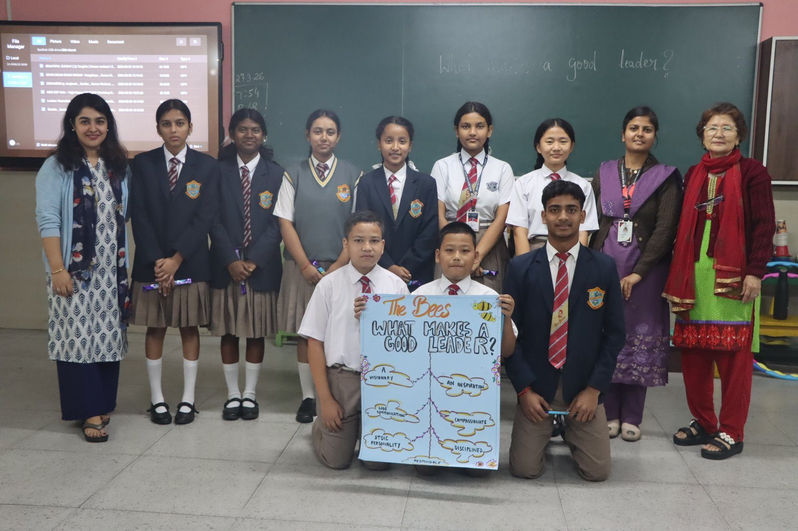
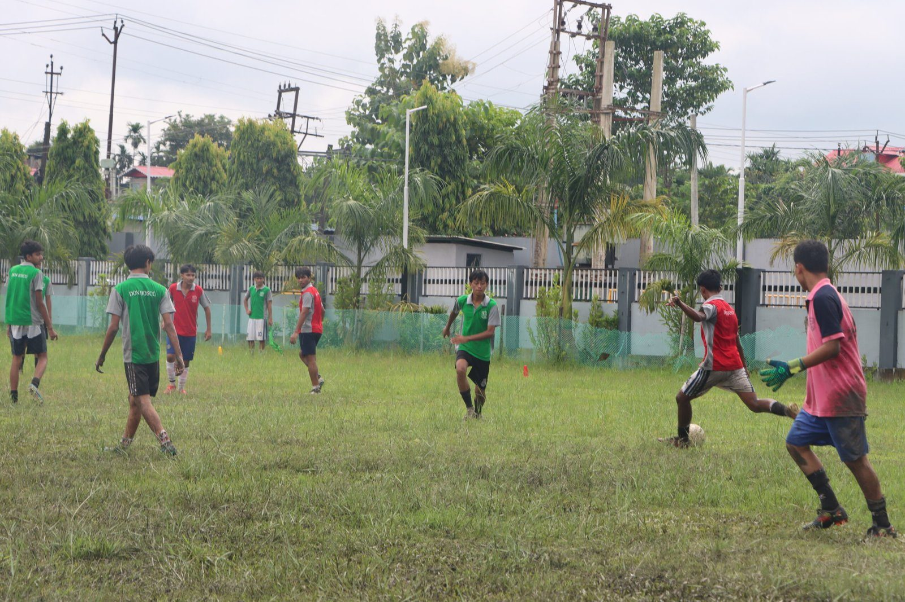
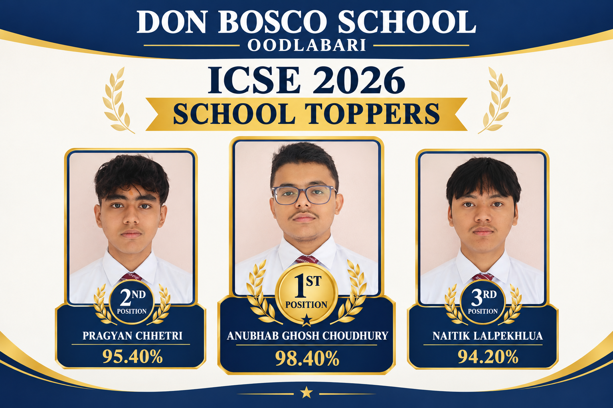

Admissions open for 2027–28, UKG and Class XI
Forms close 10 December 2026. Entrance examination, interaction and counselling on 17 and 18 December, with the merit list on 18 December.

A Salesian school in the tea-garden heart of the Dooars, forming young people who are strong in body, sharp in mind, balanced in heart and rooted in values, from UKG to Class XII.

Don Bosco School Oodlabari is a Catholic minority, English-medium, co-educational school owned and administered by the Salesians of Don Bosco, North India. It is affiliated to the Council for the Indian School Certificate Examinations, New Delhi, and teaches classes from UKG to XII.
The school follows the Preventive System of St. John Bosco: education through reason, relationship and religion, where discipline grows out of understanding and trust rather than fear. Its stated vision is to shape every child into a physically strong, intellectually competent, emotionally balanced, socially committed, morally upright, environmentally sensitive and spiritually enlightened citizen.
Read about the school, its story and its leadership
“Our aim is to shape students who are not only academically proficient but also morally grounded and equipped to face the challenges of a rapidly changing world.”
Meet the 57 teachers and 4 leaders, or see the 1,500-seat auditorium and the rest of the campus.
Twenty clubs, four houses and seven core values shape the week at Bosco — sport, art, music, service and quiet time for reflection, all inside the school day.
See sport, clubs and celebrations
Don Bosco's way of educating rests on three pillars. Education here is not policed into children. It is drawn out of them, through presence, trust and joy.

Students are helped to understand the why behind every rule, lesson and choice. Dialogue replaces diktat, so discipline becomes something a young person owns, not something imposed on them.
Educators stay close to the young, in class, on the field and at assembly. Loving-kindness and friendly presence build the trust in which character quietly takes root.
Faith and values are part of daily school life, forming conscience, compassion and a sense of purpose that outlasts the school years.
Sport, art, music, clubs and celebrations fill the school year. These photographs are the school's own.



Proof that "beyond marks" never means settling for less. The Class of 2026 set the bar for every Bosconian who follows.

What is happening at the school, as published on the school homepage.
Forms close 10 December 2026. Entrance examination, interaction and counselling on 17 and 18 December, with the merit list on 18 December.
Announced on the school homepage for students of Classes VI to XII.
Announced on the school homepage for students of Classes III to V.
Forms are available at the school office and online. The form fee is Rs 1,000, non-refundable. Forms close 10 December 2026.